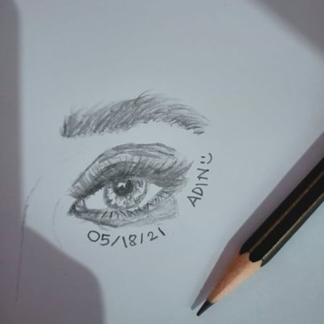

COMPUTER GAMES
DRAWING
- 
I love writing "stories", "poems" and also "drawing" when I was a kid 1. The favorite thing that I always do was drawing2. Because that time I love watching TV and I draw my favorite catoon characters3. There was a time that I joined "poster making contest" in grades school and I won 2nd place and it makes me happy4. Drawings and paintings gives me inspiration to push your limits5. Because in drawings you can draw and imagine anything you want6. Another thing is I love solving math problems and playing puzzle games whe I was on high school7. I don't really know if it is a talent but for me I can consider it as a talent in me 8. I joined "Math Techno Quiz" and I won "First place" in our school and then I went to other school to compete 9. I didn't get the first place to other school but I enjoyed it10. Because it gives me an experience to compete and also make friends 11. I also do dancing when I was on high school 12. It is fun to entertain the audience 13. And also dancing makes our body healthy bacause it is also a some kind exercise 14. Having a skills are cool and also fun 15. And skills can also be obtained by practicing and trying it 16. Not all can be good at something or instantly expert on it, we just sometimes need to push ourselves to do it17. Because
you'll never know, unless you try it18.\ Skill are everywhere, you just need to be creative and find it on your own19. So far, that's all the skill I have been explored on myself and I'm still exploring20.
Everyday we do something just to get rid of our boredom 1. We clean our house, get some walk with our dog and also gardening2. But me, my hobbies and what makes me happy are playing some computer games, drawing, dancing and also riding a bicycle3. In computer we can talk and interact with other people around the world 4. It is also cool because they made a game that can be played with other people 5. It is fun because even if you and your friends are far to each other, you can still bond through the internet 6. Some computer games are also challenging that makes you think critically 7. In some time, I do draw when I had so much time interacting to gadgets 8. Drawing something gives me a peace of mind and also happiness 9. And the material I just need was a piece of paper and pencil10. I also do some outside activities to enjoy myself 11. Like exercising outside using my bicycle 12.\ It gives me chill and time for myself when I'm riding a bicycle13. Because in our place, we are near in baywalk and the view was so relaxing and when you go to high places it's so worth it14. I do sometimes dance when I like the songs and also watch some dance tutorials to get some steps15. It is good to have hobbies in life16. It makes you feel alive and also inspired you to explore more about yourself on what makes you happy an enjoy17. For me the purpose of life was happiness18. And we are the one who will choose if we want to be happy or not19. We can find it everywhere, it could be a anything in this world, like a person, places or just some hobbies20.


In life, we have different kinds of interest to make ourselves satisfied and happy1. Just like me, there are many things that interest me in2. Like playing games, traveling, reading books and watching some videos about aliens, animals, and on how to start a business3. It is so cool, because it makes me curious and it excitess me4. Reading and watching some clips on how to start business exccites me especially today5. Because I want to help my parents while I'm studying6. And yes, that's my interest too, on how to "earn money"7. And also it excites me to learn on how to spend my money wisely8. There are games that can actually earn "real money" so I start researching about them9. After discovering that playing games can help me to earn money, it makes me it makes me happy10. Because I can now buy my own food with my own money and my parents don't need to worry about me in terms of allowance for today11. There are so many things that interest me up, and I am so happy that I give it a try12. Because it helps me to "grow" and learn new things in life13. And I always encourage myself that
nothing is impossible if you really want something14. I hope that someday I can achieve all the goals that I want with the help of the things that interest me today and for the future days15. Because sometimes, I fell down and don't have courage to do anything without knowing what the reason is16. But today I need to focus and balance all the things that I have like family,friends and school17. Because they are the ones who influence, inspired and makes me interested in our life18. I do love traveling, but the case is in order for us to travel we need money19. Maybe in the future I can do travel in different beach and mountains with my family and enjoy life20.